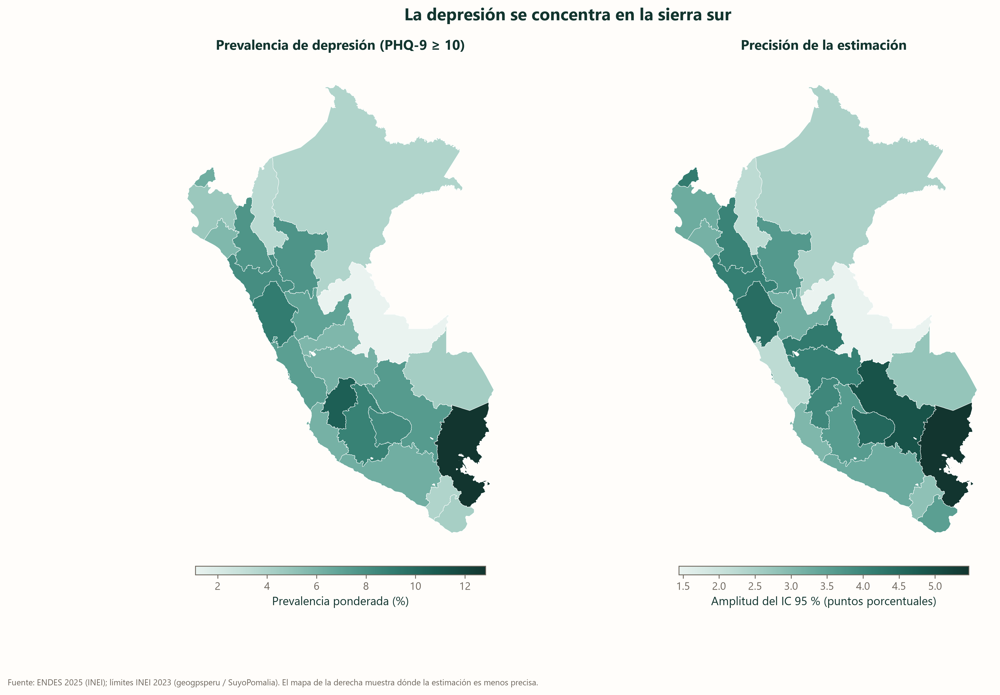
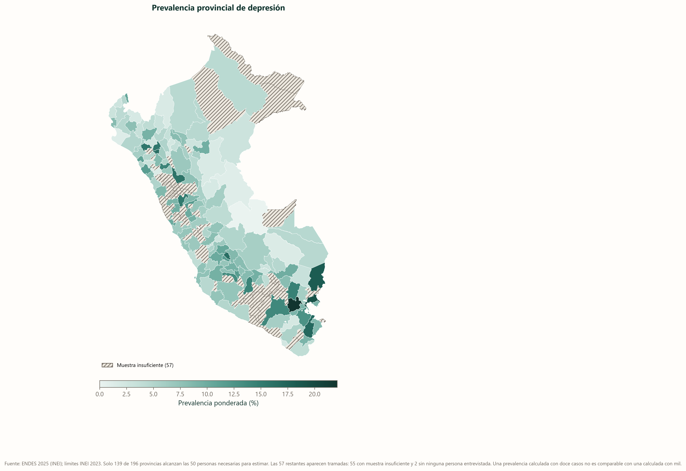
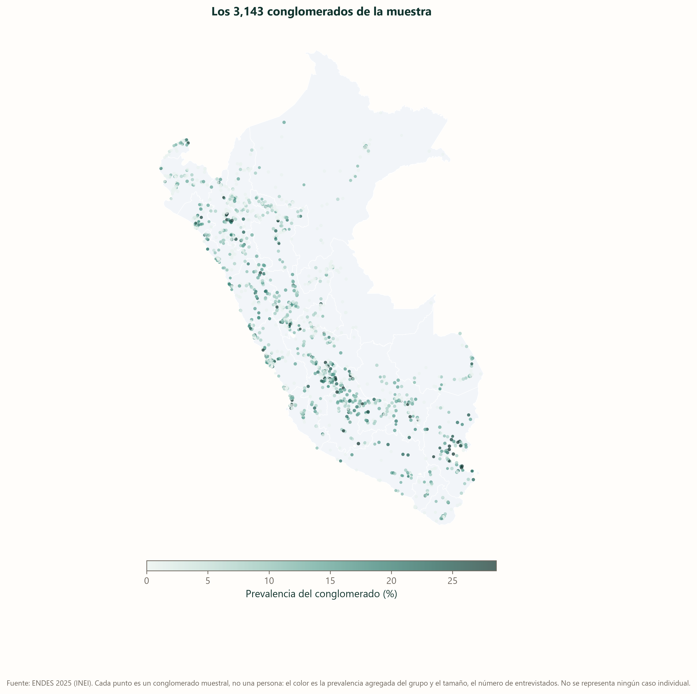
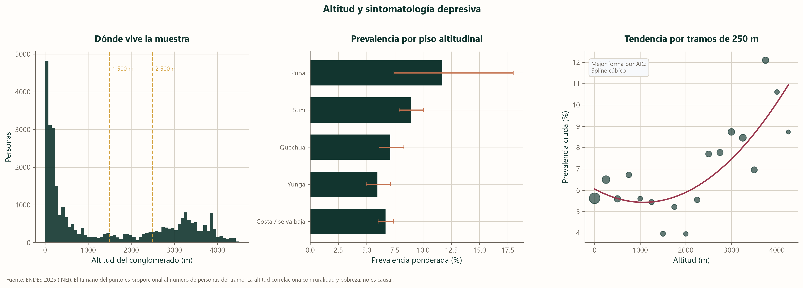
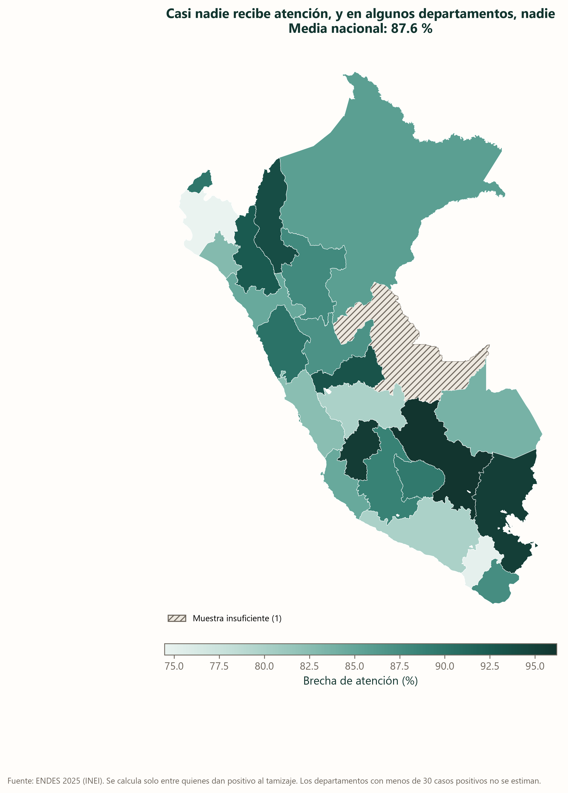

Dónde está la depresión
Puno tiene once veces la prevalencia de Ucayali. No es un matiz regional: es otro país dentro del mismo país.
La sierra sur concentra la sintomatología depresiva
Puno encabeza con 12,8 %, seguido de Huancavelica con 10,6 %. En el otro extremo, Ucayali marca 1,1 % y Amazonas 3,5 %. El mapa de la derecha es igual de importante: muestra dónde la estimación es menos precisa. Los departamentos amazónicos tienen intervalos más anchos porque su muestra es más pequeña, y conviene tenerlo presente antes de sacar conclusiones sobre ellos.

| Departamento | Personas | Prevalencia (%) | IC inferior | IC superior |
|---|---|---|---|---|
| Puno | 1116 | 12.83 | 10.34 | 15.81 |
| Huancavelica | 1222 | 10.61 | 8.79 | 12.76 |
| Ancash | 1030 | 9.08 | 7.10 | 11.55 |
| Ayacucho | 1329 | 8.79 | 7.17 | 10.75 |
| Apurimac | 1147 | 8.30 | 6.30 | 10.87 |
| La Libertad | 1096 | 8.13 | 6.31 | 10.42 |
| San Martin | 1178 | 7.79 | 6.17 | 9.79 |
| Cajamarca | 1171 | 7.71 | 5.93 | 9.97 |
Hasta dónde se puede bajar
Solo 139 de las 196 provincias tienen muestra suficiente para estimar
Bajar de departamento a provincia es tentador y casi siempre es un error. La encuesta está diseñada para dar cifras departamentales; al partirla en 196 pedazos, más de la cuarta parte se queda con menos de cincuenta personas. Esas provincias van tramadas, no coloreadas. Un mapa da a cada polígono la misma autoridad visual, y pintar una provincia estimada con doce casos junto a Lima con cuatro mil sería mentir sin decir una sola cifra falsa.

Así se reparte la muestra por el territorio
Cada punto es un conglomerado: un grupo de viviendas visitadas juntas. Son 3 143, distribuidos por todo el país. El color es la prevalencia del grupo y el tamaño, cuántas personas lo componen. Nunca se dibuja un caso individual: un punto que representara a una sola persona sería identificable al cruzarlo con otras fuentes.

La altura
El contraste entre Puno y Ucayali —altiplano contra selva baja— sugiere una pregunta que la literatura internacional ya se hizo: ¿tiene algo que ver la altitud? Hay estudios sobre hipoxia crónica y trastornos del ánimo, y hay un antecedente peruano directo con la ENDES de 2019.
Por encima de los 2 000 metros la prevalencia empieza a subir, y no antes
La relación existe pero no es una recta. En la yunga, entre 500 y 2 000 metros, la prevalencia es incluso menor que en la costa. El ascenso arranca en la quechua y se acentúa en la puna, donde llega al 11,7 %. Un modelo que asumiera una línea recta se habría perdido esa forma: el ajuste con curvatura le gana por 15,6 puntos de AIC.
- El primer panel dice cuánta gente vive a cada altura: la mayoría de la muestra está cerca del nivel del mar.
- El segundo agrupa por pisos. Las rayitas son el margen de error, y se ensanchan donde hay poca gente: la puna es la más ancha de todas.
- El tercero no agrupa: cada punto es un tramo de 250 metros. Sirve para ver si la subida es continua o si hay tramos donde baja.

| Piso altitudinal | Personas | Prevalencia (%) | IC inferior | IC superior |
|---|---|---|---|---|
| Costa / selva baja (0-499 m) | 14615 | 6.67 | 6.02 | 7.39 |
| Yunga (500-1 999 m) | 4715 | 5.96 | 4.96 | 7.13 |
| Quechua (2 000-2 999 m) | 3610 | 7.11 | 6.09 | 8.29 |
| Suni (3 000-3 999 m) | 6538 | 8.90 | 7.87 | 10.04 |
| Puna (4 000 m o más) | 748 | 11.70 | 7.42 | 17.98 |
El gradiente no depende de ella. Suni, con 6 538 personas y un coeficiente de variación de 0,062, ya marca 8,90 % frente al 6,67 % de la costa. Si se quitara la Puna del análisis, la conclusión sería la misma.
La relación no es una línea recta: tiene forma de J
Lo que más sorprende de estos datos no es que la prevalencia suba con la altura, sino que primero baje. El tramo intermedio es el más bajo de los dos cortes que se probaron: 5,96 % en la yunga (500-1 999 m) y 5,48 % en el corte de 1 500-2 499 m, por debajo del 6,67 % de la costa. Después sube con claridad: 8,90 % en la suni y 8,76 % por encima de los 2 500 metros.
Se comparó la forma de la relación ajustando tres modelos —lineal, cuadrático y con splines— y contrastándolos por AIC. El lineal queda 15,6 puntos por detrás del mejor. Es una diferencia grande: ajustar una recta a estos datos promedia el descenso del tramo intermedio con el ascenso del alto, y puede acabar concluyendo que la altitud «no importa». La forma es el hallazgo, no un tecnicismo.
No tenemos explicación, y decirlo es parte del trabajo. Hay tres candidatas razonables: seis años de diferencia entre las olas, distinta composición de la muestra en ese tramo, o una especificación del modelo que no es exactamente la misma. Ninguna se puede comprobar con los datos disponibles. Queda como pregunta abierta bien planteada; en el tramo alto, donde sí coinciden ambos estudios, la evidencia es sólida.
Los dos mapas se parecen tanto que cuesta no sacar conclusiones
Altitud a la izquierda, depresión a la derecha; la correlación entre ambos agregados departamentales es 0,63. Y precisamente por lo evidente que resulta conviene frenar: en el Perú, la altura viene acompañada de ruralidad, de pobreza, de lengua materna originaria y de menos servicios de salud. Cualquiera de esas cosas podría explicar el parecido.

Y aun así, esto no prueba que la altura cause depresión. Ninguna de las variables que pudimos ajustar mide pobreza, lengua materna ni distancia a un servicio de salud. Lo presentamos como una hipótesis que merece estudiarse, no como una conclusión.
En Cusco, 96 de cada 100 personas con tamizaje positivo no recibieron atención
Este es el mapa que debería ordenar las prioridades. Todo el país está por encima del 80 %, pero los departamentos donde la brecha es peor son, en buena medida, los mismos donde la prevalencia es más alta. La sierra sur acumula las dos cosas: más casos y menos atención.

Busca tu departamento
Los mapas de arriba muestran el patrón completo. Si lo que quieres es tu departamento, elígelo aquí y verás su cifra con su margen de error, junto a la del país y la de los departamentos que tiene más cerca en la escala.